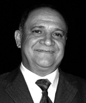

Nascido em 19 de fevereiro de 1955, em Porto Nacional/TO, graduado em Direito pela Universidade Católica de Goiás (1979) e pós-graduado em Direito Processual Civil pela Universidade Tiradentes (SE). Atuou como Procurador Jurídico do Município de Palmas e advogado em Palmas e Porto Nacional.
Foi presidente da OAB Tocantins por quatro mandatos consecutivos (1995–2007) e Conselheiro Federal da OAB (1993–1995). Durante sua gestão, destacou-se pela expansão das subseções da OAB no estado, melhoria das sedes, criação do Tribunal de Ética e da Escola Superior da Advocacia, além da construção do Palácio da Cidadania e do Clube Esportivo da Advocacia. Também promoveu congressos jurídicos, cursos de pós-graduação e a tradicional organização do Baile do Rubi, evento marcante da advocacia tocantinense.
